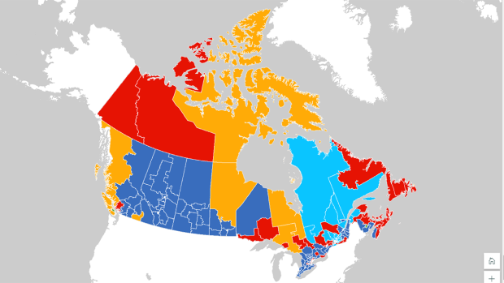
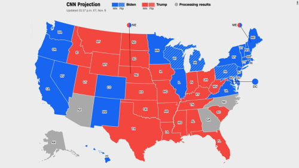
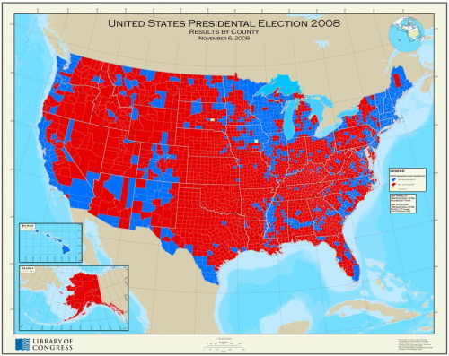

The picture below shows an average map of Canada's and usa's political rideings. This is how most of the pulic sees voting season as.
 The major Problem with this is its shows it mostly based of based on average votes in a provice or state and not through population Why is This a problem: well if we look at a map from 2008 often considered one of the most misleading maps in polical history. It Shows the repulican party (red) massivly out ways the Democrats (blue) But in Reality Blue won.
We plan on solving this problem by experimenting with different ideas that will prioritize the population instead of the misleading trait area. our first idea is through color and size where we can represent the winning party in the district with an actual number of votes it got. Second, we wanted to show a dashboard with more information so that they aren't only presented with a map of misleading information. lastly, we wanted to show the data through a 3d plain by making areas with more votes/population taller than the others.
 The Bax Creek Boys
The Bax Creek Boys